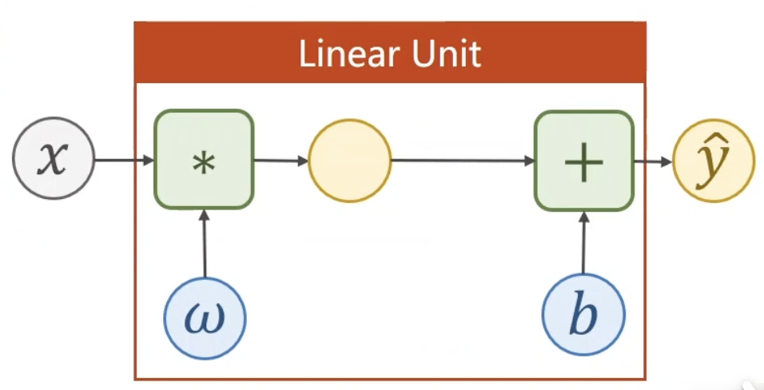
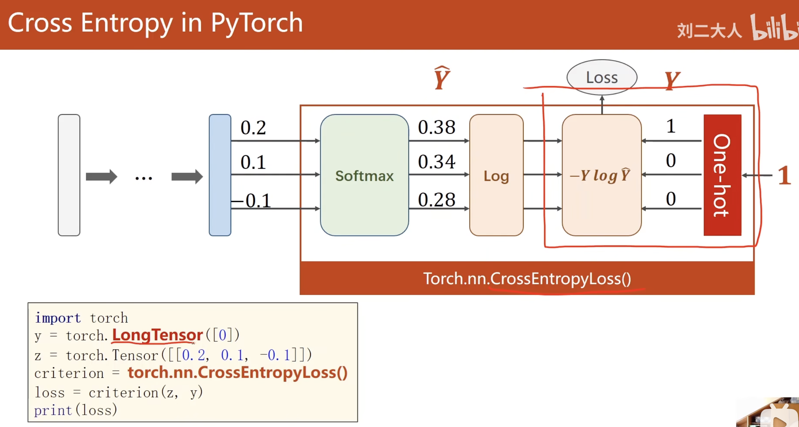

Pytorch学习重制版前言
前面写过一个Pytorch学习笔记，现在回看写的就是一坨，所以决定重写一版，这一次是有参考教程的《PyTorch深度学习实践》完结合集，这次重制版会更加系统化和规范化
目标是能够做到不使用AI自动生成代码，仅依靠自动补全就能完成代码编写
来几个小任务：
- 实现一个线性回归，不会这个可以滚了，然后实现一个简单的神经网络
- mnist手写数字识别，至少做到这里
- 实现一个小的LLM？好吧这个牛逼好像吹得有点大，不过可以试试
线性模型&梯度下降
这部分原理都会，主要是代码，这里主要掌握了numpy的个别用法
1x_data = np.array([1.0, 2.0, 3.0]) # numpy声明数组
2y_data = np.array([2.0, 4.0, 6.0])
3xy_data = np.column_stack((x_data, y_data)) # column_stack函数将一维数组按列合并成二维数组
4# 结果: [[1.0, 2.0],
5# [2.0, 4.0],
6# [3.0, 6.0]]
7
8for w in np.arange(0.0, 10.0, 0.1): # np.arange函数可以创建包含浮点数的数组
9 loss_sum = 0
10 for x, y in xy_data:
11 y_pred = forward(x, w)
12 loss_sum += loss(y, y_pred)
13 mse = loss_sum / len(xy_data)
14 w_list.append(w)
15 mse_list.append(mse)
torch重要的数据类型——Tensor
Tensor在Pytorch中担任的是数组的角色，当然，随着维度的变化，可以是单个数，也可以是向量、矩阵，甚至更高维度的数组，其关键的一点在于满足torch的很多操作，比较重要的是自动存储梯度
1import torch
2x = torch.tensor([1.0, 2.0, 3.0], requires_grad=True) # 创建一个一维Tensor，并且开启梯度追踪
3y = x * 2 # 对Tensor进行操作
4z = y.mean() # 计算y的均值
5z.backward() # 反向传播，计算梯度
6print(x.grad) # 输出x的梯度
使用案例
1w = torch.tensor([[1.0]], requires_grad=True) # requires_grad=True使得w存储了梯度信息
2
3for epoch in range(100):
4 for x, y in xy_data:
5 l = loss(forward(x, w), y) # 前向传播计算损失
6 l.backward() # 反向传播计算梯度，这里使用的方式是每一个样本点都计算一次梯度并更新参数
7 w.data = w.data - 0.01 * w.grad.data # 使用梯度下降法更新参数
8 w.grad.data.zero_() # 清空梯度，避免梯度累加
9
10for epoch in range(100):
11 l_sum = 0
12 for x, y in xy_data:
13 l = loss(forward(x, w), y)
14 l_sum += l # 累加每个样本点的损失
15 l_sum.backward() # 对总损失进行反向传播计算梯度
16 w.data = w.data - 0.01 * w.grad.data
17 w.grad.data.zero_()
注意几个点
- 计算图在前向传播过程中自动构建（原理是在每一个张量中记录计算过程，包括操作和依赖关系），pytorch会自动识别计算过程中是否包含requires_grad=True的张量，然后构建计算图
- l.backward()过程中，会根据计算图自动计算梯度，但是不会更新参数，要手动更新参数
- w.data访问的是张量的数值部分，w.grad访问的是梯度，梯度本身也是一个tensor，所以要使用w.grad.data才能访问到数值
- 每次更新参数后要清空梯度，否则梯度会累加
- 老师还讲到了item()函数，可以将只有一个元素的tensor转换为python的数值类型，但是在这里并没有用到
- item和data，item是获取数值，data是获取tensor本身，data说明这次操作不需要梯度追踪
- l的结果是一个标量，这样才能使用backward()函数进行反向传播
这部分内容还挺重要的，先写到这里，后面估计还会补充
Pytorch实现线性回归模型
模型构建
在构建模型，我们会把模型构建成一个类，继承自nn.Module，我们需要使用这个模块的方法
forword函数定义了前向传播的计算过程，是一定需要的，名字也不能改
1class LinearModel(torch.nn.Module):
2 def __init__(self): # 构造函数
3 super(LinearModel, self).__init__() # 调用父类的构造函数，不用管，写就对了，就是在LinearModel类中针对该对象本身，调用nn.Module的构造函数
4 self.linear = torch.nn.Linear(1, 1) # 定义一个线性层，输入维度为1，输出维度为1
5
6 def forward(self, x): # 前向传播函数
7 y_pred = self.linear(x) # 使用线性层进行计算，这个linear是一个可调用的对象，可以直接使用括号调用
8 return y_pred
9
10model = LinearModel() # 实例化模型
torch.nn.Linear是pytorch中预定义的线性层，可以自动管理权重和偏置，并且其本身也是继承自nn.Module的类，可以进行反向传播

损失函数与优化器
1# criterion = torch.nn.MSELoss(size_average=False) # 定义均方误差损失函数，size_average=False表示不对损失进行平均，新版推荐下面的这个
2criterion = torch.nn.MSELoss(reduction='sum') # 定义均方误差损失函数，reduction='sum'表示对损失进行求和，不是平均，平均的话用reduction='mean'
3optimizer = torch.optim.SGD(model.parameters(), lr=0.01) # 定义随机梯度下降优化器，model.parameters()获取模型的所有可学习参数，lr是学习率
这两个对象的功能如下
- criterion用于计算模型输出与真实标签之间的损失
- optimizer用于根据计算得到的梯度更新模型参数
训练过程
1for epoch in range(100):
2 y_pred = model(x_data) # 前向传播，计算模型输出
3 loss = criterion(y_pred, y_data) # 计算损失
4 print(f'Epoch {epoch+1}/100, Loss: {loss.item()}')
5
6 optimizer.zero_grad() # 清空梯度
7 loss.backward() # 反向传播，计算梯度
8 optimizer.step() # 更新参数
逻辑回归
主要解决分类问题
torchvision
torchvision记录了很多计算机视觉相关的数据集，使用torchvision.datasets可以方便地加载数据集
1import torchvision
2
3train_set = torchvision.datasets.MNIST(root='./data', train=True, download=True)
4test_set = torchvision.datasets.MNIST(root='./data', train=False, download=True)
逻辑回归模型构建
与线性回归类似，区别在前向传播部分，使用了sigmoid函数进行非线性变换
1import torch.nn.functional as F
2class LogisticModel(torch.nn.Module):
3 def __init__(self):
4 super(LogisticModel, self).__init__()
5 self.linear = torch.nn.Linear(1, 1)
6
7 def forward(self, x):
8 # 由于sigmiod没有参数进行训练，所以不需要定义在构造函数中，而是在前向传播中直接使用
9 y_pred = F.sigmoid(self.linear(x))
10 return y_pred
还有一个比较符合常识的构建方法，吧sigmoid定义成类的一个属性
1import torch.nn.functional as F
2class LogisticModel(torch.nn.Module):
3 def __init__(self):
4 super(LogisticModel, self).__init__()
5 self.linear = torch.nn.Linear(1, 1)
6 self.sigmoid = torch.nn.Sigmoid() # 定义sigmoid激活函数
7
8 def forward(self, x):
9 # 由于sigmiod没有参数进行训练，所以不需要定义在构造函数中，而是在前向传播中直接使用
10 y_pred = self.sigmoid(self.linear(x))
11 return y_pred
然后损失函数要改成二元交叉熵损失函数
1criterion = torch.nn.BCELoss(reduction='sum')
高维度数据输入的处理
唯一需要进行变化的地方是层的定义，第一个参数的值就是输入维度，第二个参数是输出维度
1self.linear = torch.nn.Linear(8, 2) # 输入维度为8，输出维度为2
多个隐藏层的神经网络
也很简单
1self.hidden1 = torch.nn.Linear(8, 16) # 第一个隐藏层，输入维度为8，输出维度为16
2self.hidden2 = torch.nn.Linear(16, 16) # 第二个隐藏层，输入维度为16，输出维度为16
3self.sigmoid = torch.nn.Sigmoid() # 激活函数
4self.output = torch.nn.Linear(16, 2) # 输出层，输入维度为16，输出维度为2
5
6def forward(self, x):
7 x = self.sigmoid(self.hidden1(x)) # 第一个隐藏层的前向传播
8 x = self.sigmoid(self.hidden2(x)) # 第二个隐藏层的前向传播
9 x = self.output(x) # 输出层的前向传播
10 return x
numpy到torch的转换
1x_train = torch.from_numpy(xy[:, :-1]) # 假设xy是一个numpy数组，最后一列是标签
2y_train = torch.from_numpy(xy[:, -1]).unsqueeze(1) # unsqueeze(1)将标签转换为二维张量，形状为(N, 1)
3y_train = torch.from_numpy(xy[:, [-1]]) # 另一种写法，保持二维张量形状
dataloader的使用
在学习中，epoch是指对整个数据集进行一次完整的训练过程，而batch是指在每次迭代中使用的数据子集的大小，iteration是指模型参数更新的次数，比如过程中使用了1000个样本，batch_size设置为10，那么每个epoch会有100次iteration
对于数据集，dataloader可以进行乱序，然后按batch_size划分数据集，方便训练模型
dataloader的建立
其使用方法如下：
1import torch
2from torch.utils.data import Dataset
3from torch.utils.data import DataLoader
4
5class MyDataset(Dataset):
6 def __init__(self, file_path):
7 xy = np.loadtxt(file_path, delimiter=',', dtype=np.float32) # 假设数据是以逗号分隔的文本文件
8 self.len = xy.shape[0] # 数据集的样本数量
9 x_train = torch.from_numpy(xy[:, :-1]) # 假设xy是一个numpy数组，最后一列是标签
10 y_train = torch.from_numpy(xy[:, -1]).unsqueeze(1) # unsqueeze(1)将标签转换为二维张量，形状为(N, 1)
11
12 def __len__(self):
13 return self.len
14
15 def __getitem__(self, idx):
16 return self.x_train[idx], self.y_train[idx]
17
18dataset = MyDataset(path) # 实例化自定义数据集
19train_loader = DataLoader(dataset, batch_size=2, shuffle=True, num_workers=2) # 创建DataLoader，batch_size为2，shuffle=True表示每个epoch开始时打乱数据，num_workers表示使用的子进程数
注意，Dataset类需要实现三个方法：__init__、__len__和__getitem__，分别是初始化数据集、返回数据集大小和根据索引获取数据样本
对于多进程，需要在main函数中使用
1if __name__ == '__main__':
来保护代码，不然会报错
使用dataloader进行训练
enumerate函数用于遍历可迭代对象，返回值是索引数值和对应的值
1for epoch in range(100):
2 for i, data in enumerate(train_loader, 0): # enumerate函数用于遍历可迭代对象，同时获取索引和值，0表示索引从0开始
3 inputs, labels = data # data是一个包含输入和标签的元组
4 y_pred = model(inputs) # 前向传播
5 loss = criterion(y_pred, labels) # 计算损失
6
7 optimizer.zero_grad() # 清空梯度
8 loss.backward() # 反向传播
9 optimizer.step() # 更新参数
上面的例子中，train_loader是一个DataLoader对象，data是从DataLoader中获取的一个batch的数据，包含输入和标签，分别赋值给inputs和labels变量
为了使用mini-batch，我们采用的是嵌套循环的结构，外层循环遍历epoch，内层循环遍历每个batch的数据
多分类问题
采用softmax函数进行多分类案例
1import torch
2y = torch.LongTensor([0]) # CrossEntropyLoss要求标签是LongTensor类型
3z = torch.Tensor([[0.2, 0.1, -0.1]])
4criterion = torch.nn.CrossEntropyLoss()
5loss = criterion(z, y)
6print(loss.item()) # 输出损失值
其中torch.nn.CrossEntropyLoss()模块的内容如下图所示

其中z是线性层计算的结果，没有经过激活函数，y是标签
transforms使用
直接看案例
1# 定义转换:将PIL图像转为tensor并归一化
2transform = transforms.Compose([
3 transforms.ToTensor(),
4 transforms.Normalize((0.1307,), (0.3081,))
5])
6
7train_set = torchvision.datasets.MNIST(root='./data', train=True, download=True, transform=transform)
8test_set = torchvision.datasets.MNIST(root='./data', train=False, download=True, transform=transform)
compose函数用于将多个转换操作组合在一起，第一步ToTensor将PIL图像转换为tensor格式，在这个案例中，就是channel x height x width，并且将像素值归一化到0-1之间，第二步Normalize进行标准化处理，使用给定的均值和标准差对图像进行归一化，(0.1307,)是均值，(0.3081,)是标准差，这两个值是MNIST数据集的统计值
然后在定义数据集时，传入transform参数，这样在每次获取数据时，都会自动应用这些转换操作
view函数的使用
输入层要求是(N, 2828)的二维张量，而MNIST数据集中的每个样本是一个28x28的二维图像，所以需要将其展平为一维向量，view函数可以实现这个功能，-1表示自动计算该维度的大小，比如一批次有64个样本，那么view(-1, 2828)会将每个样本展平为784维的向量，最终得到的张量形状是(64, 784)
1for epoch in range(100):
2 for i, data in enumerate(train_loader):
3 inputs, labels = data
4 y_pred = model(inputs.view(-1, 28*28))
5 loss = criterion(y_pred, labels)
6
7 optimizer.zero_grad()
8 loss.backward()
9 optimizer.step()
不过通常在模型的前向传播中进行展品，上面这个例子做法比较少见，但是效果是一样的
神经网络模型构建
简单的线性层的堆叠是没有意义的，所以需要引入激活函数，这里使用ReLU函数
1class MNISTModel(torch.nn.Module):
2 def __init__(self):
3 super(MNISTModel, self).__init__()
4 self.linear1 = torch.nn.Linear(28*28, 512)
5 self.relu1 = torch.nn.ReLU()
6 self.linear2 = torch.nn.Linear(512, 256)
7 self.relu2 = torch.nn.ReLU()
8 self.linear3 = torch.nn.Linear(256, 128)
9 self.relu3 = torch.nn.ReLU()
10 self.linear4 = torch.nn.Linear(128, 64)
11 self.relu4 = torch.nn.ReLU()
12 self.linear5 = torch.nn.Linear(64, 10)
13
14 def forward(self, x):
15 x = x.view(-1, 28*28) # 展平输入图像
16 x = self.linear1(x)
17 x = self.relu1(x)
18 x = self.linear2(x)
19 x = self.relu2(x)
20 x = self.linear3(x)
21 x = self.relu3(x)
22 x = self.linear4(x)
23 x = self.relu4(x)
24 x = self.linear5(x)
25 return x
优化器与评估
1criterion = torch.nn.CrossEntropyLoss()
2optimizer = torch.optim.SGD(model.parameters(), lr=0.01, momentum=0.5)
采用交叉熵损失函数，优化器使用带动量的SGD，动量可以加快收敛速度
带动量的 SGD: 累积历史梯度方向，减少震荡，更新公式如下： velocity = momentum * velocity + gradient weight = weight - lr * velocity
训练过程
大体和前面类似
1def train():
2 for epoch in range(epochs):
3 for i, data in enumerate(train_loader):
4 inputs, labels = data
5 y_pred = model(inputs)
6 loss = criterion(y_pred, labels)
7
8 optimizer.zero_grad()
9 loss.backward()
10 optimizer.step()
11 if (epoch+1) % 10 == 0:
12 print(f'Epoch {epoch+1}/{epochs}, Loss: {loss.item()}')
测试过程
with torch.no_grad()表示在该代码块中不需要计算梯度，节省内存和计算资源，with是Python中的上下文管理器，用于管理资源的获取和释放
1def test():
2 correct = 0
3 total = 0
4 with torch.no_grad():
5 for i, data in enumerate(test_loader):
6 inputs, labels = data
7 y_pred = model(inputs)
8 predicted = torch.argmax(y_pred, dim=1) # 在类别维度上取最大值
9 # _, predicted = torch.max(y_pred.data, dim=1) # 另一种写法，返回最大值和索引，这里只需要索引
10 correct += (predicted == labels).sum().item()
11 total += labels.size(0)
12
13 print(f'Accuracy: {correct/total:.4f}')
cuda的使用
就上面这个案例，如何使用cuda呢？
做如下修改：
1import torch
2import torchvision
3from torchvision import datasets, transforms
4from torch.utils.data import DataLoader
5import torch.nn.functional as F
6
7epochs = 100
8
9# 检查 CUDA 是否可用
10device = torch.device('cuda' if torch.cuda.is_available() else 'cpu')
11print(f'Using device: {device}')
12
13// ...existing code...
14
15model = MNISTModel().to(device) # 模型移到 GPU
16
17criterion = torch.nn.CrossEntropyLoss()
18optimizer = torch.optim.SGD(model.parameters(), lr=0.01, momentum=0.5)
19
20// ...existing code...
21
22def train():
23 for epoch in range(epochs):
24 for i, data in enumerate(train_loader):
25 inputs, labels = data
26 inputs, labels = inputs.to(device), labels.to(device) # 数据移到 GPU
27 y_pred = model(inputs)
28 loss = criterion(y_pred, labels)
29
30 optimizer.zero_grad()
31 loss.backward()
32 optimizer.step()
33 if (epoch+1) % 10 == 0:
34 print(f'Epoch {epoch+1}/{epochs}, Loss: {loss.item()}')
35
36def test():
37 correct = 0
38 total = 0
39 with torch.no_grad():
40 for i, data in enumerate(test_loader):
41 inputs, labels = data
42 inputs, labels = inputs.to(device), labels.to(device) # 数据移到 GPU
43 y_pred = model(inputs)
44 predicted = torch.argmax(y_pred, dim=1)
45 correct += (predicted == labels).sum().item()
46 total += labels.size(0)
47
48 print(f'Accuracy: {correct/total:.4f}')
突然发现三个目标已经完成前两个了，学的还挺快的
卷积神经网络
上面采用的方式是全连接网络，处理是将整个输入图像直接摊平，然后输入到网络中进行处理，这样会丢失图像的空间结构信息，因此，这里我们引入卷积神经网络（CNN），它能够更好地捕捉图像的空间特征
卷积层实现代码
1import torch
2
3input = [3,4,5,6,7,
4 2,4,6,8,2,
5 1,6,7,8,4,
6 9,7,4,6,2,
7 3,7,5,4,1]
8
9input = torch.tensor(input).view(1,1,5,5) # 转换为4D张量，形状为(批次大小, 通道数, 高度, 宽度)
10
11conv_layer = torch.nn.Conv2d(in_channels=1, out_channels=1, kernel_size=3, stride=1, padding=1, bias=False) # 定义卷积层
12
13kernel = torch.tensor([1,2,3,
14 4,5,6,
15 7,8,9]).view(1,1,3,3) # 定义卷积核
16
17conv_layer.weight.data = kernel.data # 将卷积核赋值给卷积层的权重
18
19output = conv_layer(input) # 进行卷积操作
池化层实现代码
1import torch
2
3input = [3,4,5,6,
4 2,4,6,8,
5 1,6,7,8,
6 9,7,4,6]
7
8input = torch.tensor(input).view(1,1,4,4) # 转换为4D张量，形状为(批次大小, 通道数, 高度, 宽度)
9
10maxpooling_layer = torch.nn.MaxPool2d(kernel_size=2)
11
12output = maxpooling_layer(input) # 进行最大池化操作
梯度消失与梯度爆炸
在深度神经网络中，随着网络层数的增加，梯度在反向传播过程中可能会变得非常小（梯度消失）或非常大（梯度爆炸）。梯度消失会导致前面的层几乎没有更新，影响模型的学习能力；而梯度爆炸则会导致参数更新过大，模型不稳定。
解决梯度消失的方法——residual net，残差网络，H(x) = F(x) + x
1class ResidualBlock(torch.nn.Module):
2 def __init__(self, channels):
3 super(ResidualBlock, self).__init__()
4 self.channels = channels
5 self.conv1 = torch.nn.Conv2d(channels, channels, kernel_size=3, padding=1)
6 self.conv2 = torch.nn.Conv2d(channels, channels, kernel_size=3, padding=1)
7
8 def forward(self, x):
9 y = F.relu(self.conv1(x))
10 y = self.conv2(y)
11 return F.relu(y + x) # 残差连接
RNN
擅长处理序列数据，具体原理不再解释
pytorch封装好了RNN相关的模块，直接使用即可，当然也可以通过两个线性层实现RNN的模块，就是复杂一点
RNNCell模块
RNNCell相当于是RNN的一个基本单元，后续需要手动实现循环的过程
1import torch
2batch_size = 1
3seq_len = 3
4input_size = 4
5hidden_size = 2
6
7cell = torch.nn.RNNCell(input_size=input_size, hidden_size=hidden_size) # 定义RNN单元
8
9dataset = torch.randon(seq_len, batch_size, input_size) # 随机生成输入数据，形状为(序列长度, 批次大小, 输入维度)
10hidden = torch.zeros(batch_size, hidden_size) # 初始化隐藏状态
11
12for idx, input in enumerate(dataset):
13 hidden = cell(input, hidden) # 更新隐藏状态
注意一个细节，为什么在RNNCell需要手动指定batch_size？ 因为RNNCell是一个单步的RNN单元，根据RNN的运行机制，输入层的形状应该是(序列长度, 批量大小, 输入维度)，隐藏层的形状是(批量大小, 隐藏层维度)，输入层的批量大小在dataset中已经指定了，而隐藏层的批量大小需要手动指定，不过，在实际的使用中，这个batch_size的大小是可以计算的
RNN模块
RNN相当于是一个整体，不需要手动实现循环的过程，输入的是序列的全部数值，产生的结果是所有隐藏层输出以及最后一个隐藏层输出
RNN会有多层的堆叠，由num_layers决定，但是会加大计算的开销
1import torch
2batch_size = 1
3seq_len = 3
4input_size = 4
5hidden_size = 2
6num_layers = 1
7
8cell = torch.nn.RNN(input_size=input_size, hidden_size=hidden_size, num_layers=num_layers) # 定义RNN模块
9
10input = torch.randon(seq_len, batch_size, input_size) # 随机生成输入数据，形状为(序列长度, 批次大小, 输入维度)
11hidden = torch.zeros(num_layers, batch_size, hidden_size) # 初始化隐藏状态
12
13out, hidden = cell(input, hidden) # 前向传播，获取所有隐藏层输出和最后一个隐藏层输出
RNN示范案例
RNNCell
1import torch
2
3epochs = 15
4input_size = 4
5hidden_size = 4
6batch_size = 1
7
8idx2char = ['e', 'h', 'l', 'o']
9x_data = [ [1, 0, 2, 2, 3] ]
10y_data = [ [3, 1, 2, 3, 2] ]
11
12one_hot_lookup = [[1,0,0,0],
13 [0,1,0,0],
14 [0,0,1,0],
15 [0,0,0,1]]
16
17x_one_hot = []
18
19for i in range(len(x_data[0])):
20 x_one_hot.append(one_hot_lookup[x_data[0][i]])
21
22inputs = torch.Tensor(x_one_hot).view(-1, batch_size, input_size)
23labels = torch.LongTensor(y_data).view(-1, 1)
24
25class Model(torch.nn.Module):
26 def __init__(self, input_size, hidden_size, batch_size):
27 super(Model, self).__init__()
28 self.batch_size = batch_size
29 self.hidden_size = hidden_size
30 self.input_size = input_size
31 self.rnncell = torch.nn.RNNCell(input_size=self.input_size, hidden_size=self.hidden_size)
32
33 def forward(self, input, hidden):
34 hidden = self.rnncell(input, hidden)
35 return hidden
36
37 def init_hidden(self):
38 return torch.zeros(self.batch_size, self.hidden_size)
39
40net = Model(input_size, hidden_size, batch_size)
41
42criterion = torch.nn.CrossEntropyLoss()
43optimizer = torch.optim.Adam(net.parameters(), lr=0.1)
44
45for epoch in range(epochs):
46 hidden = net.init_hidden()
47 loss = 0
48 for input, label in zip(inputs, labels):
49 hidden = net.forward(input, hidden)
50 loss += criterion(hidden, label)
51 predicted = torch.argmax(hidden, dim=1)
52 print(idx2char[predicted.item()])
53
54 optimizer.zero_grad()
55 loss.backward()
56 optimizer.step()
57
58 print(f"Epoch {epoch+1} / {epochs} Loss: {loss}")
在数据的维度的处理方面还是要注意一下，这一份写的不是很好，基本都是照着视频抄的
顺带一提，zip其实比想象中的好用，他是构建一个元组，可以不用管具体的维度，只要让连接的维度长度一致就行，比如上面的inputs是(5, 1, 4)，labels是(5, 1)，那么zip(inputs, labels)会生成一个长度为5的迭代器，每个元素是一个元组，包含inputs和labels对应位置的元素，形状分别是(1, 4)和(1,)
RNN
1import torch
2
3epochs = 15
4input_size = 4
5hidden_size = 4
6batch_size = 1
7num_layers = 1
8
9idx2char = ['e', 'h', 'l', 'o']
10x_data = [ [1, 0, 2, 2, 3] ]
11y_data = [ [3, 1, 2, 3, 2] ]
12
13one_hot_lookup = [[1,0,0,0],
14 [0,1,0,0],
15 [0,0,1,0],
16 [0,0,0,1]]
17
18x_one_hot = []
19
20for i in range(len(x_data[0])):
21 x_one_hot.append(one_hot_lookup[x_data[0][i]])
22
23inputs = torch.Tensor(x_one_hot).view(-1, batch_size, input_size)
24labels = torch.LongTensor(y_data).view(-1)
25
26class Model(torch.nn.Module):
27 def __init__(self, input_size, hidden_size, batch_size, num_layers=1):
28 super(Model, self).__init__()
29 self.hidden_size = hidden_size
30 self.input_size = input_size
31 self.batch_size = batch_size
32 self.num_layers = num_layers
33 self.rnn = torch.nn.RNN(input_size=self.input_size, hidden_size=self.hidden_size, num_layers=self.num_layers)
34
35 def forward(self, input):
36 hidden = torch.zeros(self.num_layers, self.batch_size, self.hidden_size)
37 output, hidden = self.rnn(input, hidden)
38 return output.view(-1, self.hidden_size)
39
40net = Model(input_size, hidden_size, batch_size, num_layers)
41
42criterion = torch.nn.CrossEntropyLoss()
43optimizer = torch.optim.Adam(net.parameters(), lr=0.1)
44
45for epoch in range(epochs):
46 output = net(inputs)
47 loss = criterion(output, labels)
48
49 optimizer.zero_grad()
50 loss.backward()
51 optimizer.step()
52
53 print(f"Epoch {epoch+1} / {epochs} Loss: {loss}")
这个十分复杂，特别是在维度上的处理，特别是在output.view(-1, self.hidden_size)这一块，主要是为了将RNN的输出转换为适合计算损失的形状，由于产生的结果是包含batch_size这个维度的，而交叉熵输入是两个维度的，只能在把batch_size这个维度展开
嵌入层
在上面的案例中，我们使用了one-hot编码来表示输入数据，这种表示方法在处理大规模词汇表时会导致维度过高，计算效率低下。为了解决这个问题，我们引入了嵌入层（Embedding Layer），它能够将离散的词汇映射到一个连续的向量空间中，从而降低维度并捕捉词汇之间的语义关系。
1import torch
2import torch.nn as nn
3
4class Model(nn.Module):
5 def __init__(self, input_size, embedding_size, hidden_size, num_layers, num_class):
6 super(Model, self).__init__()
7 self.emb = nn.Embedding(input_size, embedding_size)
8 self.rnn = nn.RNN(input_size=embedding_size,
9 hidden_size=hidden_size,
10 num_layers=num_layers,
11 batch_first=True)
12 self.fc = nn.Linear(hidden_size, num_class)
13
14 def forward(self, x):
15 hidden = torch.zeros(num_layers, x.size(0), hidden_size)
16 x = self.emb(x) # (batch, seq_len, embedding_size)
17 x, _ = self.rnn(x, hidden) # (batch, seq_len, hidden_size)
18 x = self.fc(x) # (batch, seq_len, num_class)
19 return x.view(-1, num_class)
最后的线性层用于将RNN的输出映射到类别空间中，之前的案例中没有这个线性层，是因为隐藏层输出的维度和类别数相同
嵌入层与简单的线性层的区别在于，嵌入层更加高效地处理离散输入数据，并且能够捕捉词汇之间的语义关系，线性层在理论上也可以实现类似的功能，但是其效果通常不如嵌入层好，而且计算效率较低
结尾
4天速通，而且每天基本都没怎么学，短暂的学习时间，感觉收获还是挺大的，但是学的应该不够牢固，当初的小目标还有一个LLM的实现，这个目前有点困难，还得规划一下后续的学习，这份笔记就到这里了